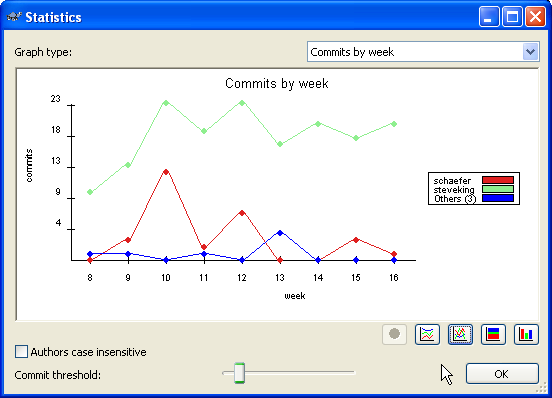
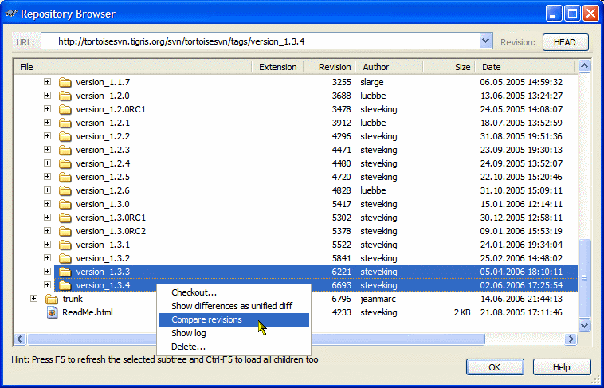
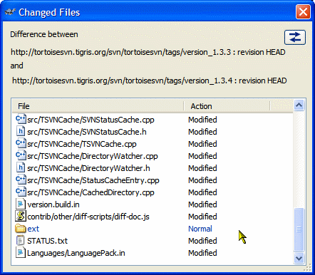

Revision graph
To see the complete history of a file or folder, you can either use the log dialog or you can have TortoiseSVN generate a graph for you. This graph shows all important (or all, if you really want) commits of the selected file/folder.

You can export that graph into many different image formats like jpeg/png/bmp/... or even the vector format wmf.
You can also select two entries and compare them. If the item is a folder, you can then see all the files which have changed in between the selected revisions. If the selected item is a file, you will see both versions of that file side-by-side.
Statistics
When you check the log messages of a file or a folder, TortoiseSVN can use the information of those commits to create some statistics and graphs for you:
Comparing tags/branches
Sometimes you want to see what has changed in between two releases, or what the difference is between your branch and the main developing line.
There are several places where you can check those differences. One is mentioned above in the revision graph. Another is from the repository browser:
Simply select the two tags or branches you want to compare, and then choose "Compare revisions" from the context menu. This will bring up the directory diff dialog:
This dialog lists all the files and folders that have changed. Doubleclicking on a file will start TortoiseMerge (or whatever diff application you have configured TortoiseSVN to use instead) so you can see exactly what has changed.